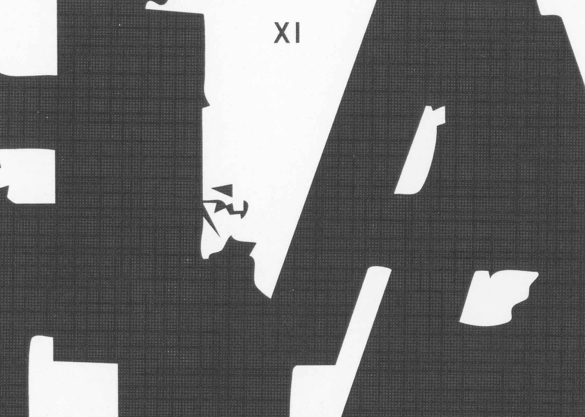
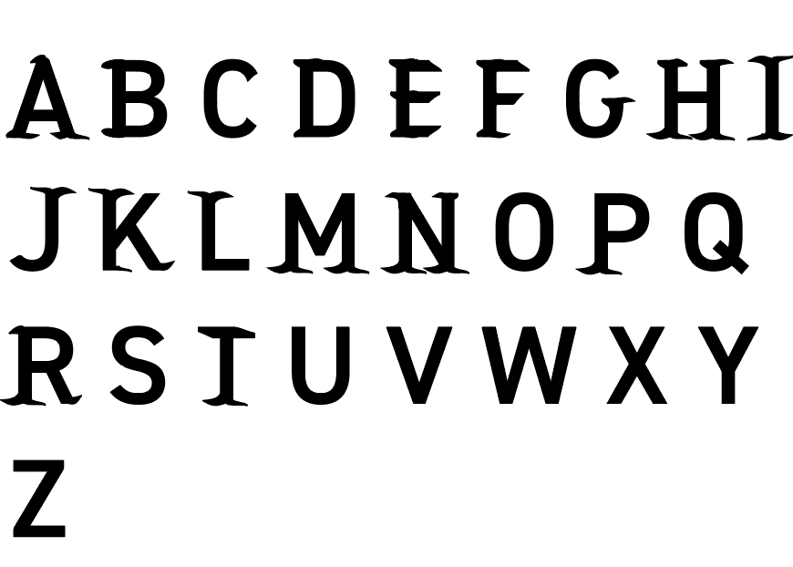
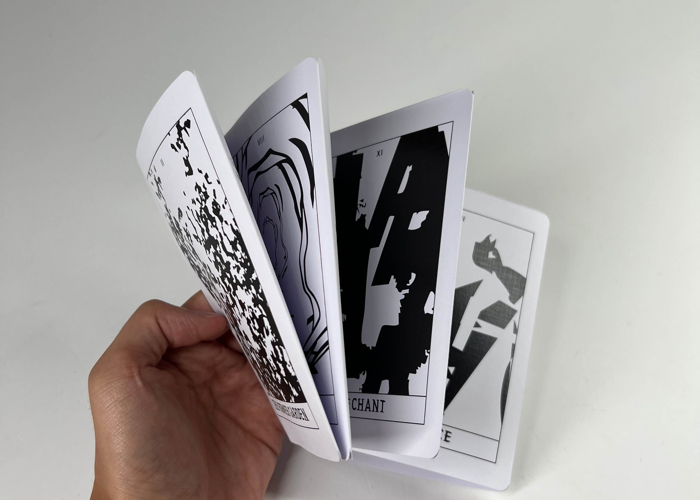
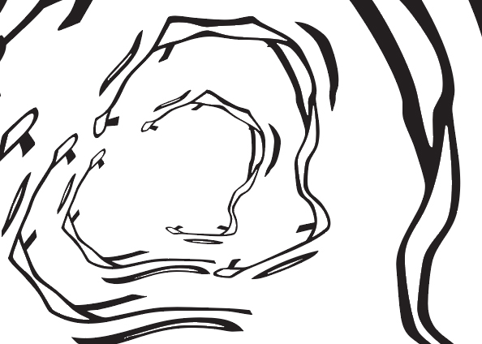
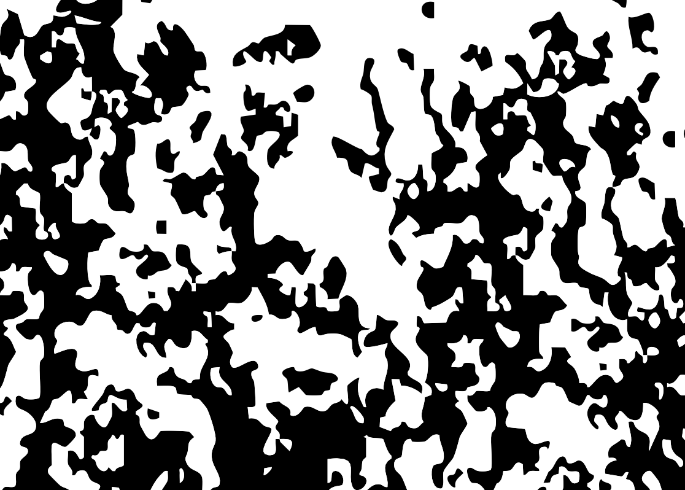
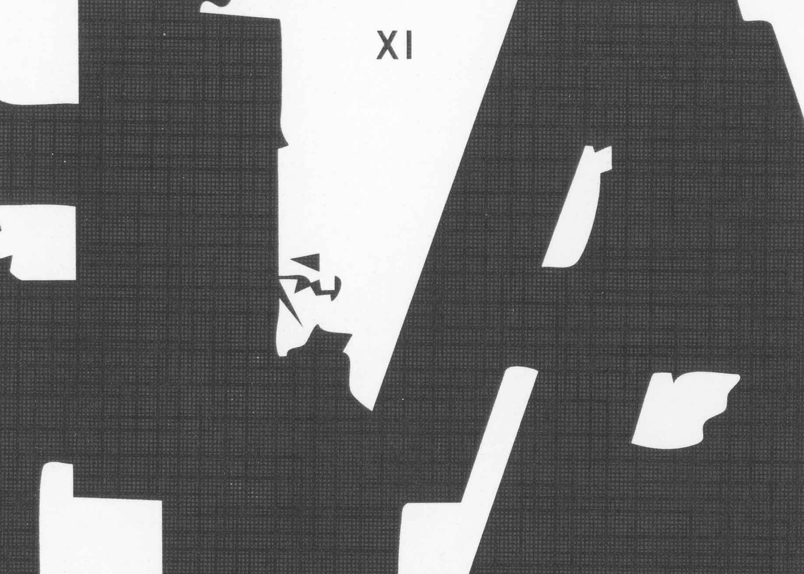
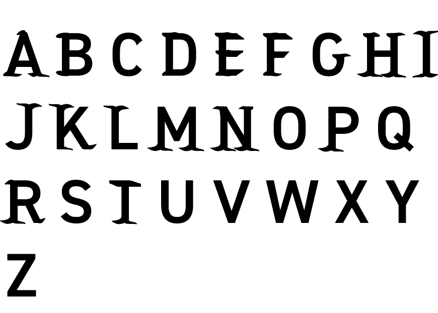
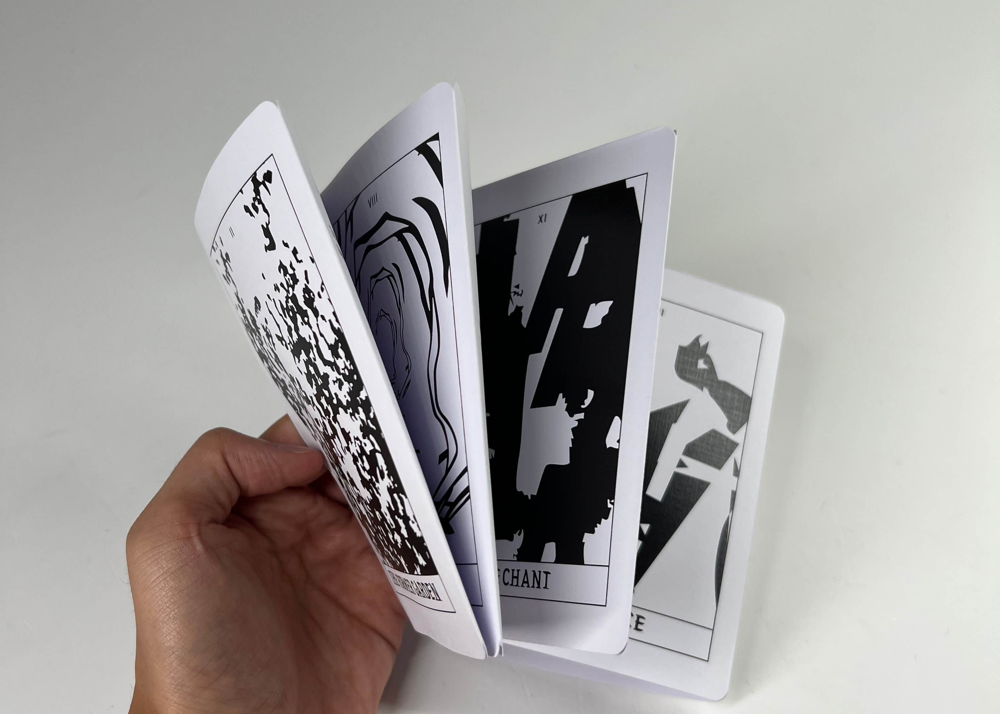
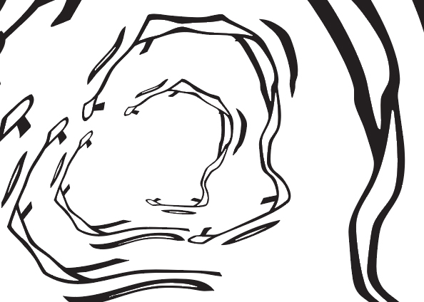
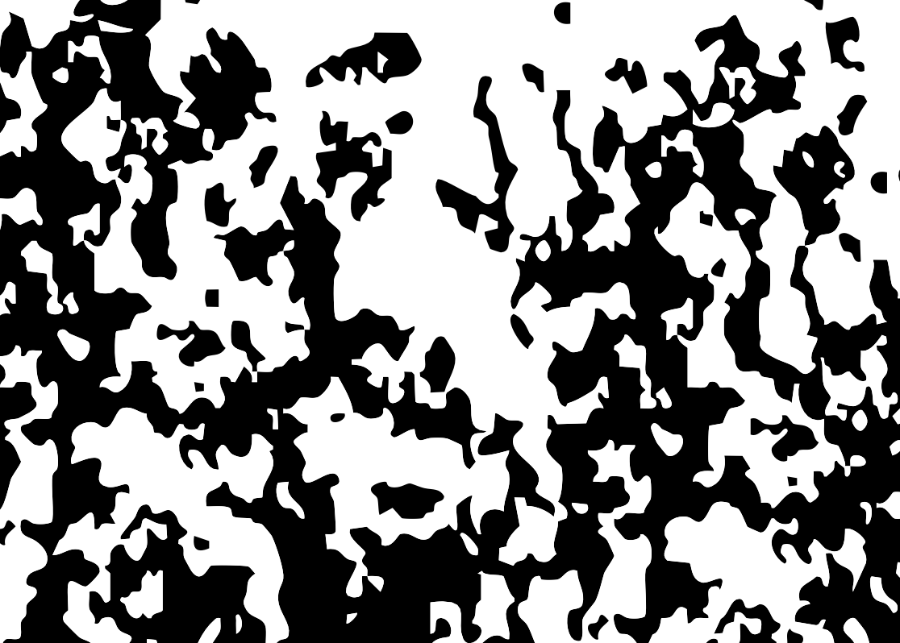

(2025)
A TYPOGRAPHIC TAROT READING
Responding to the poem ‘Tracking the Rain’ by Margaret Atwood, 'A Typographic Tarot Reading' aims to consider the theme of magic as a response to climate uncertainty. Murney (2024) asks us to consider issues of scale with modern technology - a theme drawn out in the poem - and proposes Tarot as a method of navigating these issues. The project thereafter uses abstract, expressive typography to create Tarot cards and pairs them with a ‘reading’.
concertina, 8pg, linen cardstock, bellyband, 10 x 15 cm
scanner generated graphics, custom typeface
 








